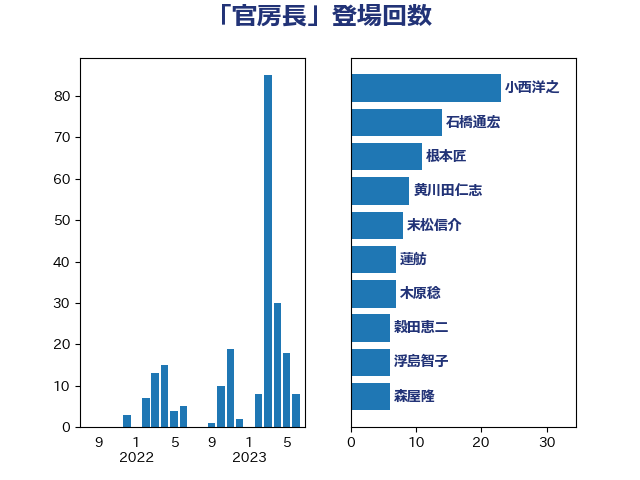

単語「官房長」

| 小西洋之 | 立憲民主党 | 23 回 |
| 石橋通宏 | 立憲民主党 | 14 回 |
| 根本匠 | 自由民主党 | 11 回 |
| 黄川田仁志 | 自由民主党 | 9 回 |
| 末松信介 | 自由民主党 | 8 回 |
| 蓮舫 | 立憲民主党 | 7 回 |
| 木原稔 | 自由民主党 | 7 回 |
| 穀田恵二 | 日本共産党 | 6 回 |
| 浮島智子 | 公明党 | 6 回 |
| 森屋隆 | 立憲民主党 | 6 回 |
| 松本剛明 | 自由民主党 | 6 回 |
| 鬼木誠 | 立憲民主党 | 5 回 |
| 福山哲郎 | 立憲民主党 | 5 回 |
| 宮内秀樹 | 自由民主党 | 5 回 |
| 塩川鉄也 | 日本共産党 | 5 回 |
| 辻清人 | 自由民主党 | 4 回 |
| 緒方林太郎 | 無所属 | 4 回 |
| 城内実 | 自由民主党 | 4 回 |
| 阿部弘樹 | 日本維新の会 | 3 回 |
| 鈴木宗男 | 日本維新の会 | 3 回 |
| 橋本岳 | 自由民主党 | 3 回 |
| 林芳正 | 自由民主党 | 3 回 |
| 斉藤鉄夫 | 公明党 | 3 回 |
| 中根一幸 | 自由民主党 | 3 回 |
| 高良鉄美 | 無所属 | 2 回 |
| 長友慎治 | 国民民主党 | 2 回 |
| 鈴木貴子 | 自由民主党 | 2 回 |
| 野田国義 | 立憲民主党 | 2 回 |
| 野村哲郎 | 自由民主党 | 2 回 |
| 足立敏之 | 自由民主党 | 2 回 |
| 足立康史 | 日本維新の会 | 2 回 |
| 落合貴之 | 立憲民主党 | 2 回 |
| 義家弘介 | 自由民主党 | 2 回 |
| 江田憲司 | 立憲民主党 | 2 回 |
| 工藤彰三 | 自由民主党 | 2 回 |
| 大塚拓 | 自由民主党 | 2 回 |
| 塚田一郎 | 自由民主党 | 2 回 |
| 加田裕之 | 自由民主党 | 2 回 |
| 伊藤岳 | 日本共産党 | 2 回 |
| 三上えり | 立憲民主党 | 2 回 |
| 馬場成志 | 自由民主党 | 1 回 |
| 阿部知子 | 立憲民主党 | 1 回 |
| 金子恭之 | 自由民主党 | 1 回 |
| 赤池誠章 | 自由民主党 | 1 回 |
| 谷公一 | 自由民主党 | 1 回 |
| 西銘恒三郎 | 自由民主党 | 1 回 |
| 萩生田光一 | 自由民主党 | 1 回 |
| 笹川博義 | 自由民主党 | 1 回 |
| 笠井亮 | 日本共産党 | 1 回 |
| 稲津久 | 公明党 | 1 回 |
| 福島伸享 | 無所属 | 1 回 |
| 磯崎仁彦 | 自由民主党 | 1 回 |
| 石橋林太郎 | 自由民主党 | 1 回 |
| 浜田聡 | NHK党 | 1 回 |
| 河野義博 | 公明党 | 1 回 |
| 松野博一 | 自由民主党 | 1 回 |
| 杉尾秀哉 | 立憲民主党 | 1 回 |
| 岡田直樹 | 自由民主党 | 1 回 |
| 大串博志 | 立憲民主党 | 1 回 |
| 古屋範子 | 公明党 | 1 回 |
| 原口一博 | 立憲民主党 | 1 回 |
| 加藤勝信 | 自由民主党 | 1 回 |
| 佐藤正久 | 自由民主党 | 1 回 |
| 伴野豊 | 立憲民主党 | 1 回 |
| 中谷一馬 | 立憲民主党 | 1 回 |